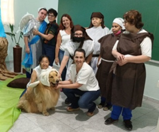
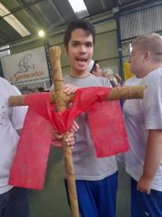
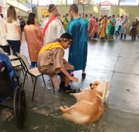

A palavra "páscoa", em hebraico, significa "passagem" Há muito tempo o povo de Deus foi escravo no Egito e era muito maltratado pelo faraó. Eram obrigados a construir palácios e pirâmides enormes. Trabalhavam muitas vezes com fome e sede o dia todo, de sol a sol. Teve uma época que o faraó mandou matar todos os meninos que nascessem, mas algumas parteiras corajosas conseguiram salvar vários bebês, dentre eles, Moisés, que depois de adulto foi chamado por Deus para libertar o povo da escravidão. Hoje, na páscoa, celebramos a passagem da escravidão para a libertação, mas também a passagem da morte para a vida pois, muitos anos depois, Deus enviou Jesus para libertar todas as pessoas do pecado mas, para isso, precisou ser torturado e morto. A boa notícia é que ele ressuscitou, venceu a morte e, por isso, sabemos que nós também viveremos eternamente.
Família: bem maior, presente de Deus para nossas vidas. "Celebrar a família é nos lembrar o porque Deus nos criou e nos chamou para vivermos juntos." É saber o porque de estarmos aqui, de procurarmos viver em união e comunhão, de cuidarmos uns dos outros, de viver o amor, o respeito, a liberdade, a paz, a harmonia, Há uma canção que diz: "Família é quem me ama e cuida de mim, Família que tem Jesus no coração É muito, é muito mais feliz."
Caipira é a pessoa que vive na roça e da roça, que planta, cultiva e colhe o alimento que nos sustenta. Nas casas simples, decoradas com fuxicos, toalhas de crochê e colchas de retalho, todos têm direito a um "dedo de prosa" para ouvir um "causo", passar as horas na janela, sentar na soleira da porta. Muitos ainda moram em casas feitas de pau-a-pique e cobertas de palha ou sapé. o modo de vida caipira inclui o fogão a lenha, o café feito no coador de pano, o leite quente ordenhado da vaca, biscoitos de polvilho, rosquinhas, pães de queijo, broas, bolos de fubá, doces em calda, etc. Sem falar nas geleias e licores de frutas. A autêntica música caipira, a "moda de viola", na voz dos violeiros, retrata a vida do homem no campo, a lida na roça, o contato com a natureza, a melancolia e a solidão do caboclo.

O aprendizado permeia toda a nossa existência e a educação também acontece de maneira
informal, com espontaneidade, se desenvolvendo no processo de socialização da pessoa. Essas
vivências ocorrem na família, no bairro, na igreja, no clube, nos grupos de amigos e familiares e até
Mesmo na escola, onde são desenvolvidas aprendizagens como hábitos, atitudes, comportamentos,
modos de pensar e agir. Mas tudo precisa fazer sentido para a vida. Cora Coralina diz:
... nada do que vivemos tem sentido, se não tocamos o coração das pessoas.
Muitas vezes basta ser:
colo que acolhe, braço que envolve,
palavra que conforta, silêncio que respeita,
alegria que contagia, lágrima que corre,
olhar que acaricia, desejo que sacia,
amor que promove.
E isso não é coisa de outro mundo, é o que dá sentido à vida.
É o que faz com que ela não seja nem curta, nem longa demais,
mas que seja intensa, verdadeira, pura... Enquanto durar."
A primavera, sem dúvida, é uma das estações mais aguardadas e celebradas. O clima é mais ameno e a natureza se veste com multicores se renovando e encantando dia a dia. As árvores, que estavam nuas pelo vento e frio do outono-inverno, começam a se vestir com folhas verdes e flores que se desabrocham numa imensidão de cores e perfumes. Os dias mais longos e o sol suave convidam para caminhadas, passeios de bicicleta e pique-niques nos verdes parques, oportunidade para recarregar as energias e viver momentos inesquecíveis com a família e amigos.
O Dia Nacional de Ação de Graças teve início em 1621, quando os ingleses chegaram à América
do Norte e, em meio à grande fome, os indígenas da região ensinaram a eles a cultivar o milho. Na
primeira colheita fizeram uma grande festa para agradecer a Deus e, a partir daí, esse dia passou a
ser celebrado todos os anos se expandindo pelo mundo. No Brasil, a celebração é feita na quarta
quinta-feira de novembro.
As datas de Ação de Graças e Aniversário da Escola são muito próximas o que propicia uma única
celebração. Comemorar o aniversário é uma forma de celebrar a vida. É um momento para expressar
gratidão a Deus pela existência e pela oportunidade de compartilhar momentos especiais com pessoas
queridas.
A AMAS - O SEMEADOR, desde 1974, está em São Caetano do Sul trabalhando para acolhimento e
atendimento de qualidade a crianças, adolescentes, jovens e adultos com deficiência.
Sua missão é promover e articular ações de defesa de direitos, prevenção, orientação e apoio à
família de cidadãos que requerem cuidados educativos especiais, promovendo uma educação pautada
em valores éticos e cristãos, de respeito à diversidade e comprometimento com exercício da
cidadania.
"E a luz se fez criança..
Aquele bebê era diferente, porque nunca deixou de ser criança.
Mesmo depois de crescido, adorava estórias sobre ovelhas e desertos; sementes e semeadores;
pardais e lírios silvestres; pombas e serpentes; castelos de areia, vento, chuva e inundações; raposas,
arados e funerais; caçadores de tesouros e de pérolas preciosas.
Desenvolveu olhos e ouvidos capazes de escutar, não só o sol, a lua e as estrelas, mas também
outros elemnentos do céu e da terra, que anunciam que o verão está próximdi e o novo mundo de Deus,
às portas. Esse menino lavrava nossa terra com seu arado amarrado nas estrelas."' (Luiz Carlos Ramos)
o Natal é celebrado em todo o mundo. Há valores que devemos resgatar e transmitir às próximas
geracões para a celebração de um Natal cristão.
o espírito de Natal vai muito além da decoração, de presentes e de comidas gostosas, é um tempo
para revermos a nossa vida interior, para sermos mais solidários, abrirmos o nosso coração à
reconciliação e estendermos as mãos, desejando aos outros a paz e também recebendo a paz,
desejando bênçãos e também sendo bênção.
É o momento de lembrarmos, de maneira muito especial, que Jesus é o "Maravilhoso Conselheiro,
Deus Forte, Pai da Eternidade e Príncipe da Paz."